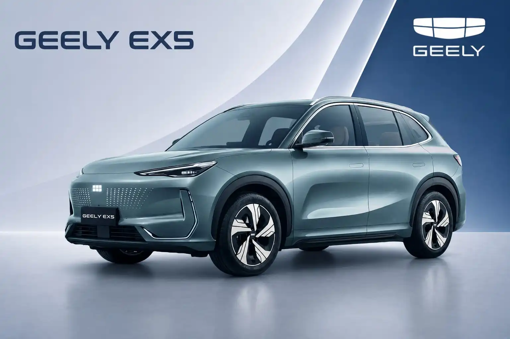

Geely EX5
Geely EX5 adalah SUV listrik 5 penumpang yang dibangun di atas platform khusus kendaraan listrik, Geely Electric Architecture (GEA). Dengan baterai LFP 60,22 kWh, jarak tempuh hingga 495 km (standar NEDC), dan fast charging 30% ke 80% dalam sekitar 20 menit, EX5 nyaman untuk keluarga maupun perjalanan jauh. Tersedia dalam dua tipe: Pro dan Max.
Harga mulai Rp 475.000.000 (OTR Jakarta). Hubungi Romin untuk harga dan promo terbaru.
Spesifikasi Utama
Kenali performa dan dimensi Geely EX5. Bodi SUV yang lapang dengan wheelbase 2.750 mm membuat kabin terasa luas, sementara motor listrik 320 Nm memberi tenaga yang responsif.
Dimensi
Performa
Baterai dan Pengisian Daya
Fitur Unggulan
Teknologi baterai, pengisian cepat, dan sistem pintar yang membuat EX5 siap untuk pemakaian harian sekaligus perjalanan antar kota.
- Baterai Geely Short Blade jenis LFP 60,22 kWh dengan jarak tempuh hingga 495 km (NEDC) pada tipe Pro dan 490 km pada tipe Max.
- Fast charging DC 100 kW dari 30% sampai 80% dalam sekitar 20 menit, serta pengisian AC 11 kW dari 10% sampai 100% dalam sekitar 6,1 jam.
- Motor listrik 218 PS dengan torsi instan 320 Nm. Akselerasi 0–100 km/jam hanya 6,9 detik pada tipe Pro.
- Dibangun di atas platform Geely Electric Architecture (GEA) yang dirancang khusus untuk kendaraan listrik, dengan struktur bodi CTB.
- Fitur V2L (Vehicle to Load) untuk menyalakan perangkat elektronik dan V2V (Vehicle to Vehicle) untuk mengisi daya mobil listrik lain.
- Layar sentuh HD 15,4 inci dengan sistem Flyme Auto, panel instrumen digital 10,2 inci, dan perintah suara berbahasa Indonesia.
- Head-Up Display (W-HUD) 13,8 inci agar informasi berkendara terlihat tanpa mengalihkan pandangan. Max
- Pengisian terjadwal dari jarak jauh (remote scheduled charging) dan pembaruan sistem Over-the-Air (OTA).
Fitur Kenyamanan
Kabin minimalis dan futuristik dengan ruang yang lega, jok yang nyaman, dan bagasi besar untuk kebutuhan keluarga.
- Kabin lapang berkat wheelbase 2.750 mm, dengan bagasi 461 liter yang bisa diperluas hingga 1.877 liter saat jok belakang dilipat.
- Jok pengemudi yang dapat direbahkan hingga hampir rata, cocok untuk beristirahat saat mobil berhenti. Pro
- Jok depan dengan fungsi pijat untuk kenyamanan di perjalanan jauh. Max
- Panoramic sunroof elektrik dengan sunshade elektrik yang membuat kabin terasa lebih terang dan lapang. Max
- Power tailgate untuk membuka dan menutup pintu bagasi secara elektrik. Max
- Sistem audio Flyme Sound 16 speaker. Max Tipe Pro memakai audio 6 speaker.
- Spion lipat elektrik dengan pemanas dan wiper depan tanpa bingkai dengan sensor hujan.
- Velg alloy 18 inci dengan desain aerodinamis.
Keselamatan
Perlindungan dasar yang lengkap tersedia di kedua tipe. Tipe Max menambahkan sistem bantuan berkendara (ADAS) yang lebih komprehensif.
- 6 airbag di kedua tipe, ditambah ABS, EBD, dan ESP sebagai fitur keselamatan standar.
- Struktur bodi CTB dan baterai Short Blade LFP yang dikenal aman serta tahan lama.
- Alarm dan immobilizer untuk keamanan kendaraan.
- Cruise control sebagai bantuan berkendara dasar. Pro
- ADAS Level 2 dengan Adaptive Cruise Control, Automatic Emergency Braking, Blind Spot Detection, dan Lane Keeping Assist. Max
- Intelligent High Beam Control yang mengatur lampu jauh secara otomatis. Max
- Rear occupant detection system untuk mendeteksi penumpang yang tertinggal di jok belakang. Max
Perbedaan Geely EX5 Pro dan Max
Kedua tipe memakai motor listrik dan baterai yang sama. Perbedaannya ada pada kelengkapan fitur kenyamanan, teknologi kabin, dan bantuan berkendara.
| Fitur | EX5 Pro | EX5 Max |
|---|---|---|
| Jarak tempuh (NEDC) | 495 km | 490 km |
| Akselerasi 0–100 km/jam | 6,9 detik | 7,1 detik |
| Panoramic sunroof | Tidak ada | Ada, dengan sunshade elektrik |
| Power tailgate | Tidak ada | Ada |
| Jok depan | Pengemudi dapat direbahkan penuh | Dengan fungsi pijat |
| Sistem audio | 6 speaker | Flyme Sound 16 speaker |
| Head-Up Display | Tidak ada | W-HUD 13,8 inci |
| Intelligent High Beam | Tidak ada | Ada |
| ADAS | Cruise control | ADAS Level 2 lengkap |
| Rear occupant detection | Tidak ada | Ada |
| Motor dan baterai | Sama: 218 PS (160 kW), 320 Nm, baterai LFP 60,22 kWh, fast charging 30–80% ±20 menit, 6 airbag | |
Harga Geely EX5 Tiap Tipe
Pilih tipe sesuai kebutuhan dan anggaran Anda. Selisih harga kedua tipe sekitar Rp 40 juta.
Rp 475.000.000
Harga OTR Jakarta
- Jarak tempuh hingga 495 km
- 6 airbag dan cruise control
- Layar 15,4 inci dan audio 6 speaker
Rp 515.000.000
Harga OTR Jakarta
- Panoramic sunroof dan power tailgate
- ADAS Level 2 dan W-HUD 13,8 inci
- Audio 16 speaker dan jok depan dengan pijat
Harga on the road (OTR) Jakarta berdasarkan harga resmi Geely Auto Indonesia saat peluncuran. Harga, promo, dan program pembiayaan dapat berubah sewaktu-waktu. Hubungi Romin untuk penawaran terbaru.
Garansi
Pembelian Geely EX5 dilindungi garansi jangka panjang untuk baterai, sistem penggerak, dan layanan bantuan darurat di jalan.
Garansi baterai seumur hidup dan paket keuntungan lain (misalnya wall charger 7 kW atau paket aksesori) merupakan bagian dari program Geely dan dapat berubah. Syarat dan ketentuan berlaku, termasuk kondisi kesehatan baterai (State of Health). Tanyakan detailnya kepada Romin.
Tertarik dengan Geely EX5?
Hubungi Romin untuk trade-in mobil lama Anda, jadwal test drive, atau konsultasi pembelian Geely EX5. Melayani Jakarta Utara, Selatan, Barat, Pusat, Timur, Pluit, Sunter, Bekasi, Tangerang, Cibubur, dan Cikarang.